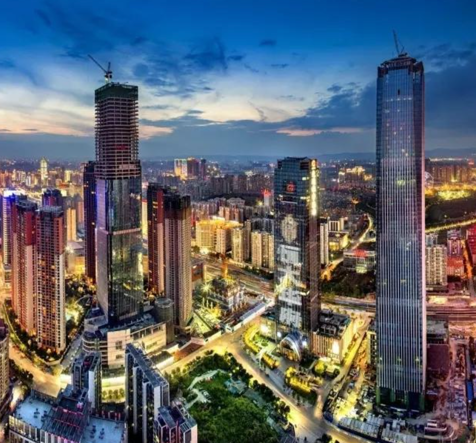
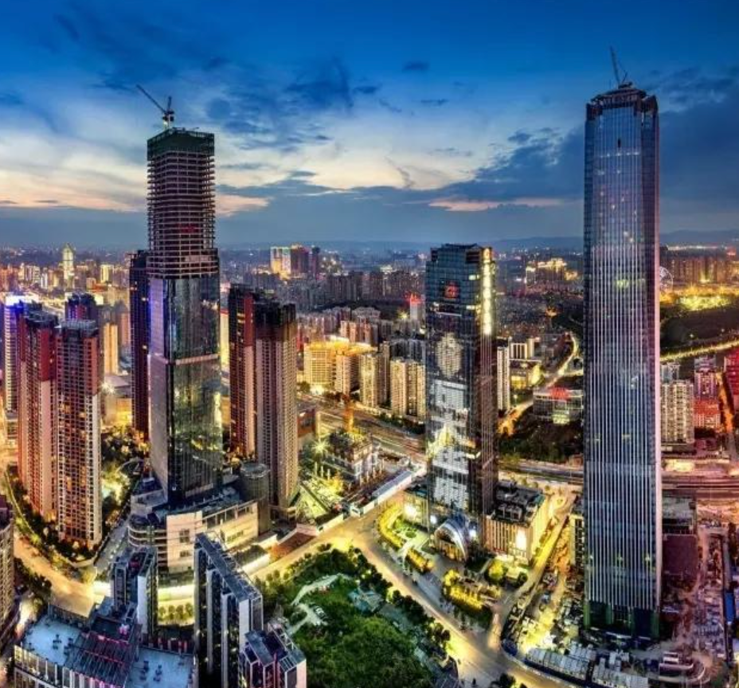

青海历史概述
青海的历史悠久，是中华文明的重要发源地之一。青海位于中国西北部，历史上曾是多个民族和文化的交汇地。青海的古代历史可以追溯到新石器时代，出土的遗址和文物表明，早在公元前几千年，青海地区就有人类活动。青海湖和祁连山一带是古代丝绸之路的必经之地，成为中原文化与西域文化交流的纽带。 青海的历史文化深受藏族、回族、汉族等多民族的影响。西藏的文化自古传入青海，藏传佛教在青海发展尤为深厚。唐朝时期，青海曾是吐蕃的领土，后世的西藏文化与青海的藏族文化相互交融。元代至清代，青海成为中国西部的重要边疆地区，历代中央政府在这里设立了行政机构，并加强了对青海的统治。 20世纪以来，青海逐渐成为中国西部的一个重要省份。随着新中国成立后的改革开放，青海不仅在经济和文化上取得了长足进步，也逐步发展成为中国重要的矿产资源、能源生产基地。青海的多民族融合文化、丰富的自然资源和独特的历史背景，使其成为中国西部不可或缺的一部分
远古时期
青海的远古历史可以追溯到新石器时代，具有丰富的文化遗产和考古发现。青海位于中国西北高原，地理位置特殊，是中华文明与西域文明的交汇点之一。以下是青海远古时期的历史概述： 史前时期：青海的史前文化遗址分布广泛，尤其在青海湖周围、祁连山地区和柴达木盆地等地。考古学家在这些地区发现了大量的新石器时代遗址，如柳湾文化、大通文化等，表明在距今大约6000-3000年的时期，青海已经有人类在这里繁衍生息。 青海湖周边：青海湖地区的史前文化尤为突出，出土了许多器物、石器、骨器等遗物，反映了当时人类的生产和生活方式。这一地区被认为是青海湖文化圈的发源地之一，代表着古代高原地区的早期文明。 柴达木盆地：柴达木盆地是青海的一个重要地理单元，也是中国西部重要的古文化遗址区。这里的东柴达木遗址出土了大量的古人类骨骼化石和器物，显示出早期的农牧文化以及远古时期的交易与文化交流。该地区曾是中原文化与西域文化的交流走廊。 青藏高原与丝绸之路：青海自古以来是丝绸之路的一个重要枢纽，作为东西方文化交流的关键区域，青海的远古时期也是中原、东亚与中亚、西域文化的重要交汇点。 总体而言，青海的远古历史体现了高原地区人类的智慧与适应力，这里的文化和遗址不仅展示了青海独特的自然环境，也为理解青藏高原地区的历史演变提供了重要线索。
丝绸之路时期
青海是丝绸之路的重要组成部分，历史上作为东西方文化、经济和宗教交流的枢纽，承载着重要的历史使命。丝绸之路分为陆路和海路，青海位于陆上丝绸之路的北道和南道之间，成为连接中原与西域、印度、中亚、西亚及欧洲的关键通道。 在汉朝时期，青海地区已成为丝绸之路的重要一环。青海的柴达木盆地和祁连山地区是古代丝绸之路的重要节点，商队、使节、文化使者和宗教僧侣通过这里进入西域和中亚。由于青海地处高原，常常是从内地进入西藏、印度和中亚的必经之路，成为通商、交流的重要通道。 唐朝时期，青海的丝绸之路贸易尤为繁荣。唐朝与西域各国的交流频繁，青海成为了中原和西域之间的文化桥梁。丝绸、茶叶、瓷器等商品通过青海的商道向西输出，而香料、宝石、马匹等则从西域进入青海，进一步推动了中西文化的交流与融合。 青海的丝绸之路不仅是物质商品的流通地，也是文化、宗教和艺术传播的重要通道。青海地区的藏传佛教等宗教文化就是在这一时期逐渐传入，成为区域文化的重要组成部分。塔尔寺等佛教寺庙的建立，也标志着青海作为丝绸之路重要节点的历史地位。 总的来说，青海在丝绸之路时期不仅是贸易的通道，更是文化和宗教交流的桥梁，发挥了连接东西方的重要作用。
近现代发展
青海的近现代发展经历了多次重大变革和进步，尤其是在20世纪以来，随着中国政治、经济的变动，青海逐步融入国家发展大局，并在多个领域取得了长足的进展。 民国时期，青海仍然处于相对独立的局面，尽管政府采取了一系列改革措施，但交通不便、经济基础薄弱，青海的社会经济发展相对滞后。然而，在民国末期，青海开始重视矿产资源的开发，尤其是煤矿和盐湖资源。 新中国成立后，青海的现代化建设迈出了重要步伐。1950年代，青海开始实施一系列基础设施建设项目，特别是在交通、能源和工业方面。随着青藏铁路的建设，青海逐渐成为西部重要的交通枢纽。与此同时，青海的矿产资源和水力资源得到了更广泛的开发，成为全国重要的能源生产基地。 改革开放以来，青海逐步加大经济结构调整，能源、矿产、农业和旅游业成为支柱产业。青海被定位为中国西部的重要能源基地，尤其在新能源领域取得了显著进展，光伏和风电产业快速发展。此外，青海还加强了生态保护工作，推动绿色经济与可持续发展。 进入21世纪，青海依托资源优势与国家政策支持，发展新能源、生态旅游和现代农业等新兴产业，逐步走向多元化、可持续发展的道路。青海的近现代发展不仅推动了地区经济增长，也为中国西部的发展作出了重要贡献